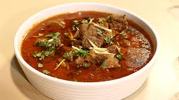
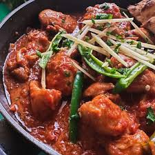

QORMA
Qorma is a famous and delicious dish from the Indian subcontinent, often prepared on special occasions and feasts. It is made using a blend of meat, yogurt, spices, and ghee, which give it a unique taste and aroma. Traditional qorma is usually cooked with either mutton or chicken. The meat is sautéed with yogurt, onions, garlic, ginger, and a mix of aromatic spices until it develops a rich color and irresistible fragrance. The key element in qorma is its spices. Ingredients like cloves, cardamom, cinnamon, and mace enhance its flavor and make it even more delectable. This dish is not only tasty but also highly nutritious. The protein-rich meat, the health benefits of yogurt, and the use of pure ghee make it an energy-boosting meal. Qorma is typically served with naan, tandoori roti, or saffron rice. Its distinct flavor and enticing aroma make it a favorite among food lovers.
BIRYANI

Karachi Biryani is one of the most famous and beloved dishes in Pakistan. Its unique taste, aromatic spices, and special cooking method set it apart from other types of biryani. This biryani is usually prepared with spicy and tangy flavors, using ingredients like yogurt, tomatoes, potatoes, and fried onions. These ingredients are layered with fragrant rice, enhancing its delicious taste and rich aroma. One of the key features of Karachi Biryani is its bold and spicy flavor. It is typically made with either mutton or chicken, though some people also prefer beef biryani. Saffron, rose water, and kewra essence add a distinctive fragrance that makes it even more delightful. Not just in Karachi, but all over Pakistan, this biryani is loved by food enthusiasts. Many famous restaurants and street vendors in the city are known for their authentic Karachi Biryani, attracting people from far and wide to experience its special taste. Karachi Biryani is often served with raita, salad, and tangy chutney, which further enhance its flavors. Its signature spiciness and irresistible aroma make it a dish that people crave again and again.
KABAB

Kebabs are one of the most popular and flavorful dishes enjoyed across the world. Originating from the Middle East and South Asia, they have become a staple in many cuisines due to their rich taste and smoky aroma. Made from minced or whole meat, kebabs are seasoned with a variety of spices, including cumin, coriander, garlic, and red chili. They are then grilled, roasted, or fried to perfection, giving them a deliciously juicy texture. There are many types of kebabs, such as Seekh Kebab, Shami Kebab, and Chapli Kebab. Each has its own distinct taste and preparation style, making them a favorite among food lovers. Kebabs are not just delicious but also rich in protein and nutrients, making them a fulfilling and satisfying meal. They are often served with naan, paratha, or rice, along with chutney and fresh salad. Whether enjoyed as a street food snack or part of a grand feast, kebabs always leave a lasting impression with their mouthwatering flavors and irresistible aroma.
KARAHI
**Karahi** Karahi is one of the most beloved and flavorful dishes in South Asian cuisine. Named after the deep, wok-like pan in which it is cooked, this dish is known for its rich, spicy taste and aromatic gravy. Karahi is typically made with chicken, mutton, or beef, cooked with tomatoes, yogurt, and a blend of traditional spices. Unlike other curries, it is prepared with minimal water, allowing the ingredients to cook in their own juices, enhancing the flavor. The key to a perfect Karahi lies in its spices and cooking technique. Freshly ground black pepper, red chilies, garlic, and ginger give it a bold and mouthwatering taste. Some variations also include butter or cream for a richer texture. This dish is often served with naan or roti, accompanied by fresh salad and raita. Its irresistible aroma and spicy kick make it a favorite choice for gatherings and celebrations. Whether enjoyed in a roadside dhaba or a fine-dining restaurant, Karahi remains a symbol of authentic South Asian cuisine, loved by food enthusiasts around the world.
GAJAR HALWA
**Gajar ka Halwa** Gajar ka Halwa is a traditional South Asian dessert loved for its rich taste and comforting texture. Made with grated carrots, milk, sugar, and ghee, this sweet dish is a winter favorite, often enjoyed at special occasions and festivals. The preparation of Gajar ka Halwa involves slow-cooking fresh red carrots in milk until they become soft and flavorful. Sugar, ghee, and cardamom are then added to enhance its sweetness and aroma. Some variations also include khoya (reduced milk) for extra richness. A generous amount of dry fruits like almonds, pistachios, and cashews are sprinkled on top, adding a delightful crunch and making the halwa even more delicious. Its warm, melt-in-your-mouth texture makes it a perfect treat during cold weather. Gajar ka Halwa is not just a dessert but also a nutritious delight, as carrots are rich in vitamins, and milk provides calcium. The combination of ingredients makes it both tasty and wholesome. Whether served hot at home or enjoyed at a wedding feast, Gajar ka Halwa remains an all-time favorite, bringing joy with every bite.
Go back